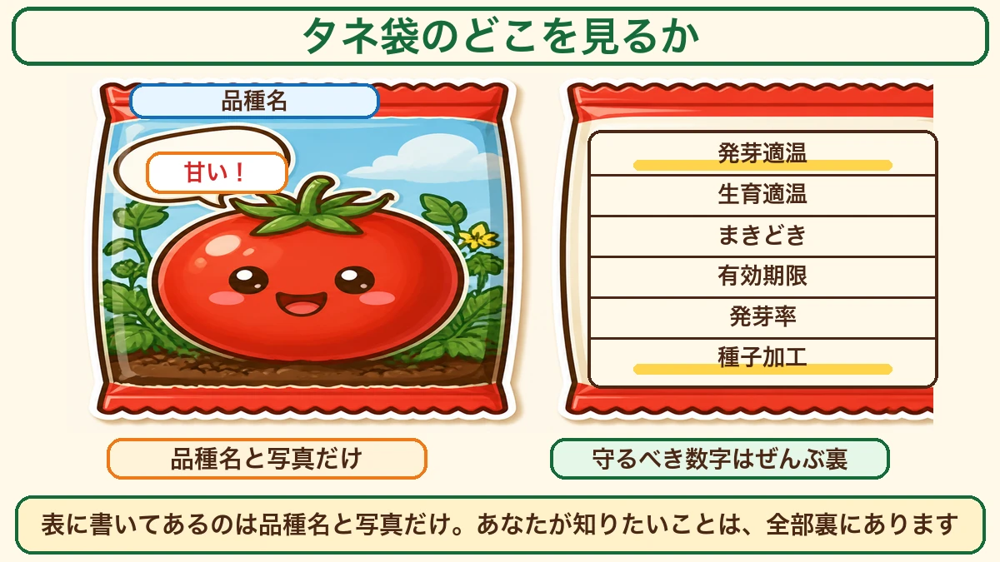
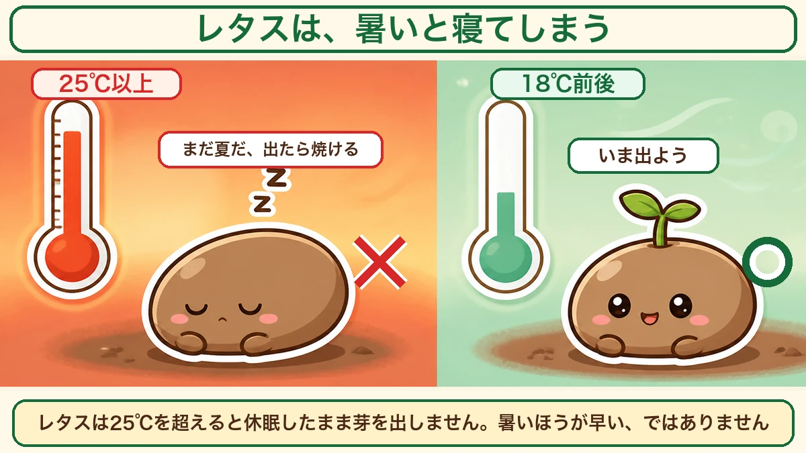
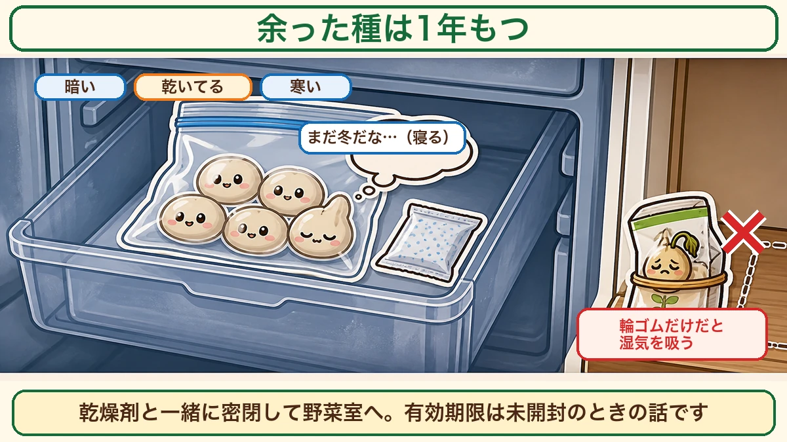
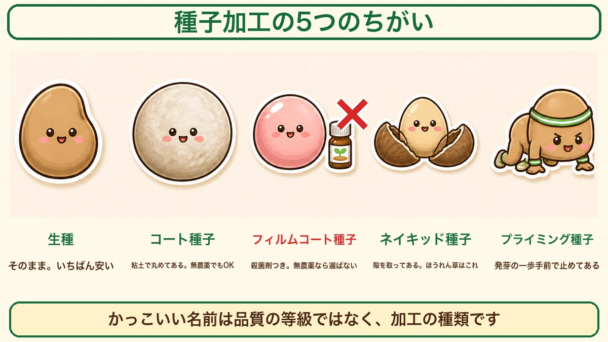

Read the seed packet from the back 🌱 Do you know what "film-coated" actually means?

🗨️ "I pick seed by looking at the picture."
🗨️ "'Film-coated' sounds like the good stuff."
🗨️ "Is last year's leftover seed worth keeping?"
Hello, I'm Eiko. Eight years of growing vegetables organically and without pesticides, and a teaching licence in science.
There's a stretch in late winter when there's almost nothing to do outside, and the seed racks are already full. What you choose there decides the next six months. And nobody ever teaches you how to choose.
The most important line first:
Read the packet from the back.
The front gives you a variety name and an appetising photograph. Everything you actually need is on the back ☺️

What this diagram says （図解の文字）
- Title: "What to look at on a seed packet"
- Front: variety name ／ "Sweet!" ／ "just the variety name and a photo"
- Back: germination temperature ／ growing temperature ／ sowing window ／ packed-for date ／ germination rate ／ seed treatment
- "Every number you have to obey is on the back."
- "The front has the variety name and a photo. Everything you want to know is on the back."
The front tells you almost nothing
All it says is "which vegetable"
The front usually carries three things: the vegetable and variety name, a photograph of it grown, and a line of copy ("sweet", "easy to grow").
None of that affects how you grow it. The photograph is of the best plant they got. The copy was written by the company selling it. "Easy to grow" may or may not mean easy in your garden.
The back has the numbers you have to obey
Turn it over. In small print you'll find:
- Germination temperature
- Growing temperature
- Sowing window (often a calendar by region)
- Packed-for / use-by date
- Germination rate
- Seed treatment
That's the instruction manual for that seed.
In your first year it's easy to grow a whole season without reading it once. Nothing comes up, so you blame the soil, or the watering, and start digging. Often the real answer is that you sowed two months outside the window — and it said so on the back.
① Germination temperature — the number that matters most
It means soil temperature, not air
The "germination temperature" on a packet is the temperature of the soil, not the air.
The air can be 68 °F (20 °C) while the soil is still 54 °F (12 °C). Soil holds water, so it warms slowly. The seed lives in the soil — 54 °F is its world.
So when it's turned mild and nothing is coming up, assume the ground is still cold.
Lettuce falls asleep when it's warm
A good example. Lettuce germinates best around 68 °F (20 °C). And above about 77 °F (25 °C) the seed stays dormant and simply doesn't germinate.
You'd assume warmer means faster. It's the opposite. To lettuce, above 77 °F means "it's still summer — come up now and you'll cook", so the seed waits.
It wakes up when things drop to around 64 °F (18 °C).

What this diagram says （図解の文字）
- Title: "Lettuce falls asleep when it's hot"
- ✗ Above 77 °F (25 °C) — "still summer; I'd burn if I came up" (the seed is drawn asleep)
- ○ Around 64 °F (18 °C) — "time to come up"
- "Above 25 °C lettuce stays dormant and doesn't germinate. Warmer is not faster."
It isn't awkwardness — lettuce is originally a cool-climate plant. Vegetables have a place they came from, and the seed remembers it.
Water at twice your usual instinct
Until they germinate, water about twice as often as feels necessary.
By the time the surface looks slightly dry, it is already dry down where the seed is. It still looks damp to you while the seed is drying out. A great many failures to germinate are just this.
Don't let it dry until they're up. After that, ease off gradually.
② Date and germination rate — the date assumes an unopened packet
Read the two together
The back will say something like "packed for 2027" and "germination 80 % or more". Those two belong together: up to this date, at least 80 % should come up.
Not 100 %. Sow ten and two won't appear — that's normal, and it's why sowing a little extra is assumed.
But once it's open, the date stops applying
Here's the trap. The date is for an unopened packet.
Once opened, the seed takes up moisture from the air. Seed sleeps dry; let damp in and it starts respiring and spending its reserves. A packet folded over with an elastic band on a shelf will not last to that date.
Leftover seed keeps for about a year
That doesn't mean bin it. In my experience a year is fine. I've sown seed left over from one autumn the following autumn and grown it perfectly well. Germination drops a little, so sow slightly more.
Three things to store it properly:
- Put a silica gel sachet in with it (the kind that comes in packaged food)
- Seal it — a zip bag or a jar with a lid
- Into the fridge
Dark, dry and cold. As far as the seed is concerned winter is still going on, so it doesn't wake up.

What this diagram says （図解の文字）
- Title: "Leftover seed keeps about a year"
- Dark ／ dry ／ cold — "still winter, then… (goes back to sleep)"
- ✗ "an elastic band alone lets it take up moisture"
- "Seal it with a desiccant and put it in the fridge. The date on the packet is for an unopened packet."
Leftover salad and brassica seed can be used up together
Komatsuna, mizuna, shungiku, spinach — leafy seed always ends up as small leftovers.
Their germination temperatures are all roughly 59–77 °F (15–25 °C). Below about 86 °F (30 °C) most of them will come up.
So sow the lot in one autumn session and you'll use them up. Sow each kind in its own block, though — I mixed them once and couldn't tell what I was harvesting.
③ Seed treatment — the least-known part of the packet
Those technical-sounding words are just treatments
You'll see terms like pelleted, film-coated, naked and primed. They sound like quality grades. They aren't — they only describe what was done to the seed.

What this diagram says （図解の文字）
- Title: "Five seed treatments, and how they differ"
- Raw / untreated seed — "as it is. The cheapest"
- Pelleted seed — "rolled in clay. Fine for organic growing"
- Film-coated seed ✗ — "carries fungicide. Don't choose it if you grow without pesticides"
- Naked seed — "the husk removed. This is the one for spinach"
- Primed seed — "stopped one step short of germinating"
- "An impressive name doesn't mean better seed."
Raw seed — nothing done to it
Untreated, naked seed. Cheapest and most natural. Some kinds are fiddly because they're so small, but this is the default and it's fine.
Pelleted seed — rolled in clay
The seed is coated in clay to make it round and larger.
Carrot and onion seed is tiny enough that you drop it as soon as you pinch it. Made bigger, you can place them one at a time — fewer sowing mistakes, less thinning later.
It's clay, so there's no problem for organic growing.
Film-coated seed — it carries fungicide
This is the part I most want to pass on.
"Film" and "coated" sound like a premium finish. I thought so too at first.
They aren't. Film-coated means the seed has been dressed with fungicide.
It kills pathogens on the seed surface so it doesn't rot after sowing. As farming it's perfectly rational, and it isn't dangerous.
But if you've decided to grow without pesticides, don't choose it. You keep every chemical out of the soil, and then start the whole thing with treated seed — it doesn't follow. If the back says film-coated, treated or fungicide-treated, look for another packet.
Naked seed — the one to buy for spinach
Spinach seed has a hard husk that doesn't let water through easily, which is why spinach comes up so unevenly.
Naked seed has that husk removed. Water gets in straight away, so it germinates faster and more evenly. If spinach has frustrated you, try it — since I switched, the patchy-row problem has essentially gone.
Primed seed — stopped just short of germinating
The most worked-on of the lot. The seed is given water and taken right to the edge of germinating, then dried to hold it there. Like a runner frozen mid-crouch.
Sow it and it moves immediately, so it's fast and even. It costs more and doesn't store well — buy it to use that season.
So what should you buy?
How I choose
- Raw seed by default — cheapest, most natural
- Pelleted for anything too small to handle (carrot, onion)
- Naked for spinach, always
- Avoid film-coated / treated if you grow without pesticides
- Primed when you really need an even stand
Open-pollinated or F1 — either is fine
- Open-pollinated: older varieties. You can save your own seed and sow it again next year
- F1 hybrid: a crossed, one-generation variety. Evens out, and often more disease-resistant
Neither is the right answer. Save your own seed → open-pollinated. Want fewer failures first → F1. They're different goals.
I use both. I save seed from turnips and komatsuna, and buy F1 tomatoes and cucumbers.
Turn the packet over, starting today
Once you can read the back, the whole seed rack looks different:
"Treated — put it back."
"Germinates at 68 °F, so that's about four weeks after my last frost."
"Packed for next spring? I'll use it this season."
You can make those calls standing in the shop.
To sum up
- ✅ Read the packet from the back. The front is a name and a photo
- ✅ The six numbers: germination temp ／ growing temp ／ sowing window ／ date ／ germination rate ／ treatment
- ✅ Germination temperature is soil temperature. Lettuce stays asleep above 77 °F
- ✅ Water twice as often as feels right until they're up
- ✅ The date assumes an unopened packet. Once open: desiccant, sealed, fridge
- ✅ Leftover seed keeps about a year. Leafy seed can be used up in one sowing
- ✅ Film-coated = fungicide-treated. Not for a pesticide-free garden
- ✅ Pelleted is only clay. Spinach wants naked seed
You don't have to do all of it. Take one packet you already own and turn it over. If you can find the germination temperature on it, that's the whole first step 🌱
Thank you for reading!